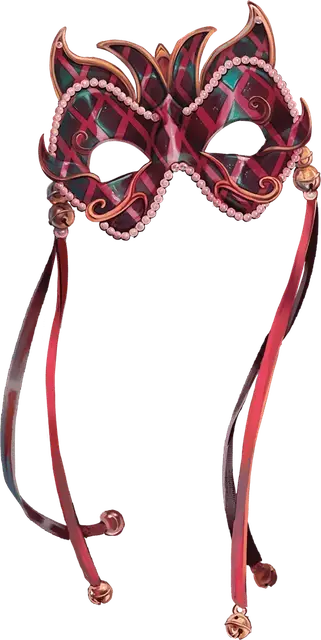

Маска Шута
Jester’s Mask
Чудесный предмет, легендарный (требуется настройка бардом, колдуном или чародеем)

Рекомендованная стоимость от 50 001 зм
Эта красочная маска-домино «Арлекин» украшенная жемчугом. Пока вы носите эту маску, вы получаете следующие преимущества:
Харизматический фокус. Вы можете использовать маску как магическую фокусировку для заклинаний. Вы получаете бонус +3 к любым броскам атаки заклинаниями и Сл спасбросков заклинаний, которые используют Харизму в качестве базовой характеристики.
Чудесный побег. Когда существо попадает по вам броском атаки, вы можете использовать свою реакцию, чтобы исчезнуть в клубе дыма и разноцветных блестках. Вы не получаете урона и вместо этого телепортируетесь вместе со всем, что на вас надето или несете, в незанятое пространство, которое вы можете видеть в пределах 30 футов от себя. После того, как эта реакция будет использована, её нельзя будет использовать снова до следующего рассвета.
Перевернутое-вывернутое. Когда вы выбрасываете «1» на к20, вы можете заменить результат, на «20». После того, как это свойство будет использовано, его нельзя будет использовать снова до следующего рассвета.